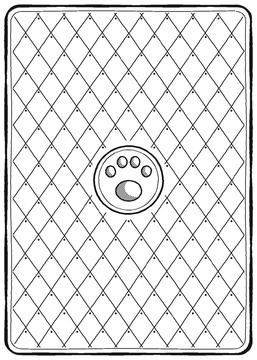
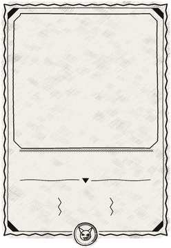
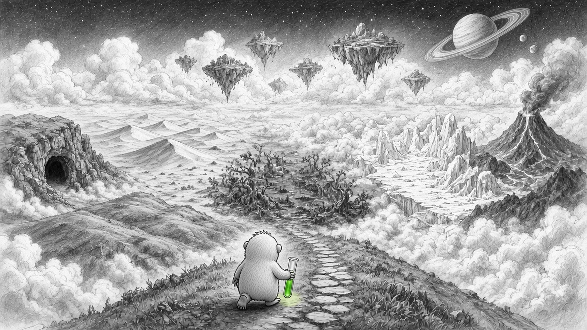

翻牌就是行动
每翻开一张牌、每走一步，就是一个回合。你动一下，怪物也动一下。

一切都是卡牌
英雄、怪物、地形、装备、宝箱、商店……桌上所有东西都是一张牌。
铅笔画的世界
黑白的铅笔世界，只有小鼹鼠是黄色的。颜色被偷走了，要靠你找回来。
开场漫画 · 精选
一共 17 格，完整版在 卡牌世界。




每翻开一张牌、每走一步，就是一个回合。你动一下，怪物也动一下。

英雄、怪物、地形、装备、宝箱、商店……桌上所有东西都是一张牌。
黑白的铅笔世界，只有小鼹鼠是黄色的。颜色被偷走了，要靠你找回来。
一共 17 格，完整版在 卡牌世界。